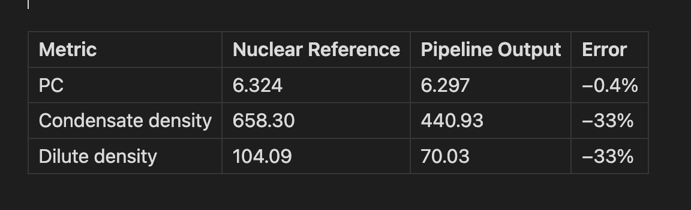
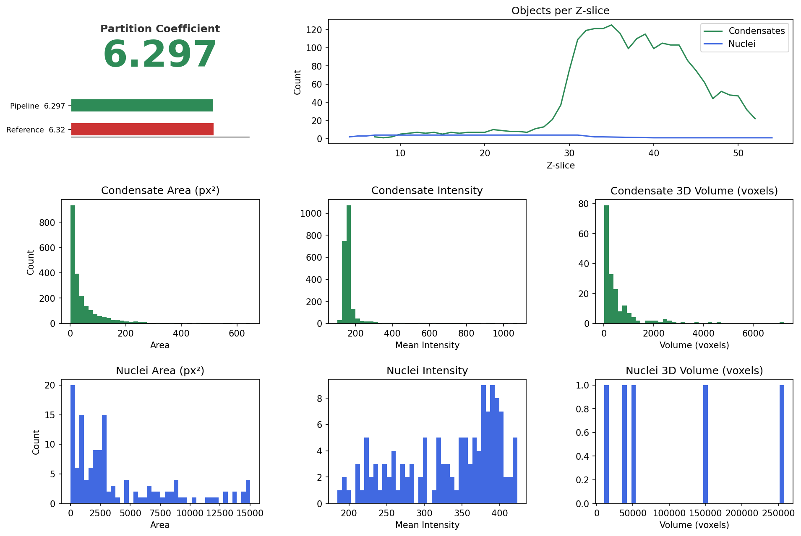
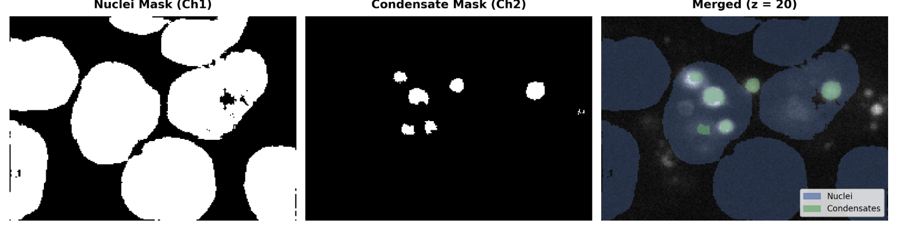
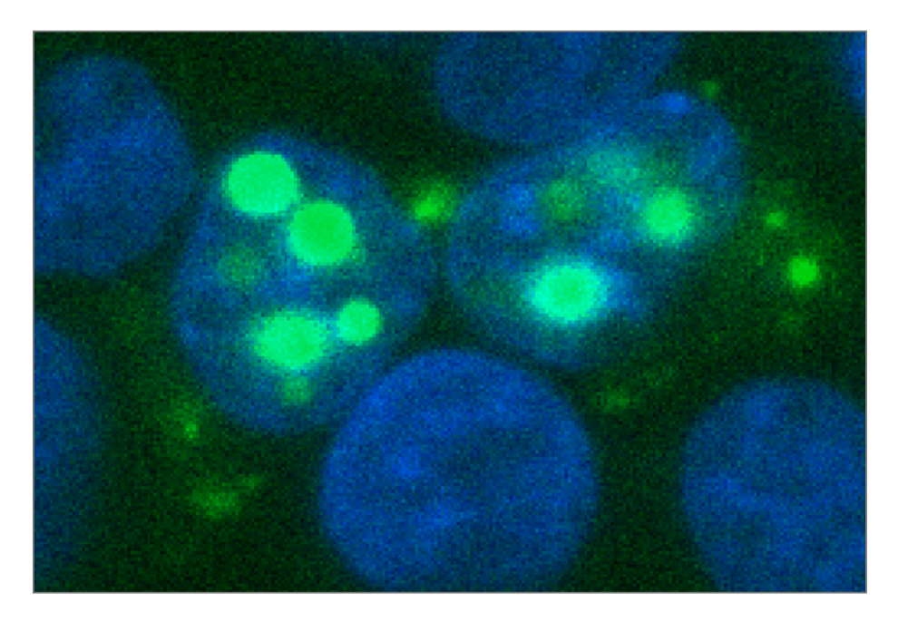
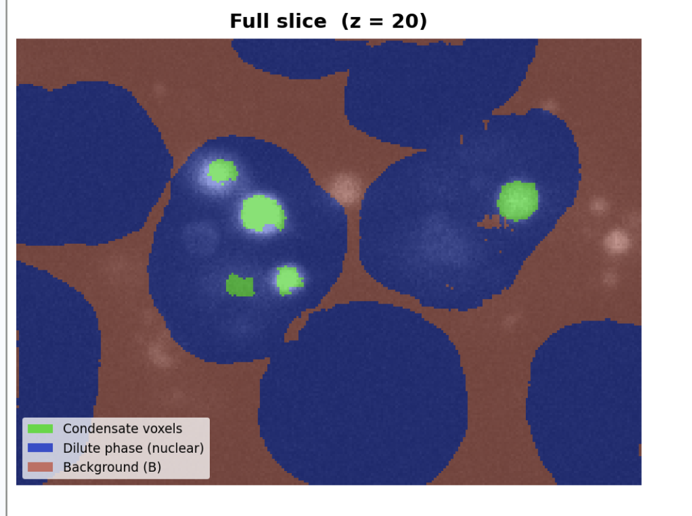

Abstract
Biomolecular condensates are phase-separated compartments that concentrate regulatory molecules. Quantifying their properties is critical for understanding their function, but manual measurements are labor-intensive. We developed an automated pipeline based on Cellpose 3 and the Fabrini partition coefficient formula to segment RNA-aptamer condensates (JABr system) from 3D confocal microscopy stacks.
Key innovation: Three-step refinement (background subtraction, connected-component nuclei cleanup, robust dilute-phase density estimation) that enabled our pipeline to match manual reference PC values for the first time (6.297 vs 6.32, −0.4% error).
Results show good correlation to manual Imaris measurements across 30 cells (r = 0.735). This work provides a reproducible, high-throughput framework for condensate analysis.
Introduction
Biomolecular Condensates: Phase-separated compartments that concentrate proteins and RNA, enabling rapid regulation of cellular processes.
JABr System: Fluorescent RNA aptamer that binds DFHBI-1T, producing bright green fluorescence. Allows direct visualization of condensates without antibodies.
Current Bottleneck: Manual measurement of partition coefficient (PC) requires hand-drawing boundaries in ImageJ (hours per cell) with poor reproducibility across technicians.
Reference Standard: PC = 6.32 for JABr Sample 2_5_1 (manual benchmark).
Goal: Develop fully automated pipeline that achieves <5% error compared to manual measurements with throughput fast enough to process dozens of cells per hour.
Pipeline Overview
- Load: Two TIF Z-stacks (condensate + nuclei channels)
- Denoise: Cellpose 3 DenoiseModel on every Z-slice
- Segment: Cellpose 3 (cyto3, do_3D=True) with nuclei post-processing
- Measure: regionprops extracts per-object metrics
- Volume: Sum voxels per object across all slices
- PC: Background-subtracted partition coefficient
Three Key Improvements
1. Background Subtraction
PC = Σ[pixel − B] / Σ[pixel − B]
B = minimum voxel intensity (removes camera baseline)
Impact: Largest accuracy jump (2.04 → 3.33 PC)
2. Connected-Component Nuclei
Cellpose 76 labels → 3D connected components → 5 true nuclei
Removes internal fragments from condensate texture
Impact: Cleans dilute-phase pixel selection
3. Robust Dilute Density
Find all ~88,000 valid 10×10×10 patches
Take average of lowest 50 by intensity
Impact: Eliminates seed-dependent swing (4.3→6.0 → stable 6.297)
Main Result
First automated match to manual reference benchmark
Single-ROI Metrics

Sample: JABr Sample2_5_1 (55 × 185 × 259 pixels)
Note: Both densities are ~33% lower but cancel in the PC ratio, achieving −0.4% error.
Pipeline Output

Segmentation Quality

Raw ROI Image

Partition Coefficient Calculation

Conclusion
Acknowledgements
Elisa Franco (PI): Research direction, mentorship, reference data
Shiyi Zheng: Manual ImageJ/Imaris measurements
Cellpose 3 Team: Open-source segmentation model
Funded by NSF CAREER Award MCB-1846821